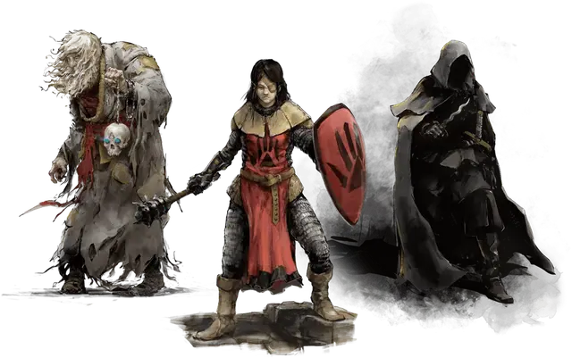

Чёрная перчатка Бэйна
Black Gauntlet of Bane
Средний Гуманоид (Человек), законно-злой

Класс Доспеха 16 (кольчуга)
Хиты 51 (6к8 + 24)
Скорость 30 футов
| мод | спас | ||
|---|---|---|---|
| СИЛ | 18 | +4 | +4 |
| ЛОВ | 11 | +0 | +0 |
| ТЕЛ | 18 | +4 | +4 |
| мод | спас | ||
|---|---|---|---|
| ИНТ | 12 | +1 | +1 |
| МДР | 15 | +2 | +5 |
| ХАР | 18 | +4 | +4 |
Навыки Восприятие +5, Запугивание +7
Иммунитет к состояниям испуг
Чувства пассивное Восприятие 15
Языки Общий
Опасность 6 (2300 опыта)
Бонус мастерства +3
Особенности
Аура ужаса. Когда враждебное существо в пределах 5 футов от чёрной перчатки делает бросок атаки или спасбросок, оно совершает бросок с помехой. Существа, невосприимчивые к состоянию испуга, невосприимчивы к этой особенности.
Использование заклинаний. Чёрная перчатка является заклинателем 5 уровня. Его базовой характеристикой является Харизма (Сл спасброска от заклинания 15, +7 к попаданию атаками заклинаниями). У него подготовлены следующие заклинания жреца:
• Заговоры (по желанию): указание [guidance], священное пламя [sacred flame], чудотворство [thaumaturgy];
• 1-й уровень (4 ячейки): порча [bane], благословение [bless], лечение ран [cure wounds], направляющий снаряд [guiding bolt] (см. «Действия» ниже).;
• 2 уровень (3 ячейки): глухота/слепота [blindness/deafness], удержание личности [hold person], тишина [silence];
• 3 уровень (2 ячейки): послание [sending], духовные стражи [spirit guardians].
Тактическая дисциплина. Чёрная перчатка совершает с преимуществом все проверки характеристик и спасброски, совершаемые во время боя.
Действия
Мультиатака. Чёрная перчатка совершает две атаки булавой.
Булава. Рукопашная атака оружием: +7 к попаданию, досягаемость 5 футов, одна цель. Попадание: 7 (1к6 + 4) дробящего урона плюс 13 (3к8) урона некротической энергией .
Направляющий снаряд (заклинание 1-го уровня; требуется ячейка для заклинания). Дальнобойная атака заклинанием: +7 к попаданию, дистанция 120 фт., одно существо. Попадание: 14 (4к6) урона излучением, и следующий бросок атаки, совершённый по цели до конца следующего хода чёрной перчатки, совершается с преимуществом. Если чёрная перчатка накладывает это заклинание, используя ячейку заклинания 2-го уровня или выше, урон увеличивается на 1к6 для каждого уровня ячейки выше 1-го.
Описание
Бейн — бог тирании, он и его последователи жаждут править миром. Бейн даёт силу тем, кто готов править железной рукой. Навязывая миру свой порядок, последователи Бейна стремятся, чтобы умные, сильные и амбициозные достигали вершин, а слабые оставались в рабстве.
В какой бы форме Бейн ни являлся, его всегда можно узнать по угольно-чёрной правой руке. Обычно он носит на ней рукавицу или перчатку, если хочет скрыть свою сущность, и раскрывается, лишь когда приходит время показать истинную мощь. Он всегда одет с иголочки в роскошный костюм благородного или броню и снаряжение успешного генерала наёмников. Его любимое оружие — булава.
Бейн подавляет тех, кто проявит хоть каплю слабости, силой заставляет их покориться или сокрушает физической и магической мощью. Он так харизматичен, что способен убедить сильных присягнуть ему в обмен на власть над другими. Он пробуждает жажду власти, что есть в сердце любого смертного, тщательно продуманными посулами и лестью. Он — мозг Мёртвой Троицы, его амбиции направляют группу.
Преданные последователи Бейна— воители, желающие править силой оружия и принуждением, жестокие тираны, обеспечивающие верность угрозами и дарами.
Они порабощают слабых и одаряют сильных, превращая тех в верных вассалов.
Жестокие тираны. Там, где последователи Бейна захватывают власть, они устанавливают драконовские правила, чтобы защитить своё правление. Они подавляют любых соперников и щедро вознаграждают тех, кто им верен.
Культ воинов. Культисты Бейна — воители, они носят тяжёлую броню и сражаются булавами, мечами, копьями и арбалетами. Правые рукавицы своей брони они красят в чёрный в честь своего покровителя. Жрецы Бейна носят чёрные булавы с навершиями в виде сжатого кулака.
Иерархия культа. Культисты Бейна подчиняются строгой военной субординации. Низшие в иерархии — кулаки Бейна, солдаты, беспрекословно подчиняющиеся приказам. Ими командуют железные консулы, коварные полевые офицеры, умело организующие кулаков в бою. Чёрные рукавицы — это жрецы, командующие консулами.